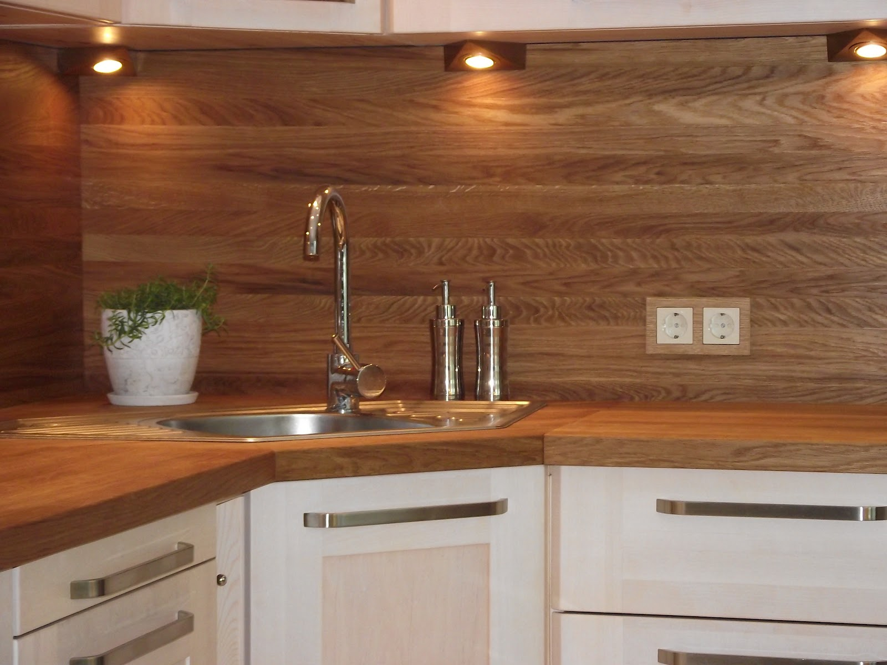

Welcome to Virtuvė
Roko virtuvė
2020.10.28 08:06
Pradžia Apie Paslaugos Naujienos Galerija Gauti pasiūlymą Kontaktai Apie Roko virtuvę Restoranai Naujienos Paslaugos Pasiūlymai Šventiniai pasiūlymai Pasiūlymai Jūsų šventėms Renginiai Galerija Gauti pasiūlymą Kontaktai Roko virtuvė Pasirūpinsime skaniomis vaišėmis Jūsų šventei
Paserviruosime ir patieksime patiekalus ant Jūsų stalo per 60 min.
Pasirinkite iš 214 patiekalų asortimento
Užsisakyti Užsisakykite konsultaciją Sutinku, kad mano pateiktais kontaktais, būtų pateiktas pasiūlymas Apie ROKO VIRTUVĘ „Roko virtuvė" – jauna ir inovatyvi komanda, pasiruošusi pasirūpinti ne tik skaniomis Jūsų šventės vaišėmis, bet ir šventės aptarnavimu bei dekoravimu.
Kokybiškos vaišės – mūsų prioritetas. Tad visuomet kviečiame užsukti pokalbiui, kurio metu aptarsime Jūsų norus ir pageidavimus, ir sudarysime individualų meniu.
Šventes organizuojame ne tik "Roko virtuvės" restoranuose, bet ir bet kurioje, Jūsų pasirinktoje vietoje.
Patikėję šventę mums, galite būti tikri, kad viskas, ką gaunate, yra mūsų nuoširdaus darbo rezultatas. Tikimės, kad mūsų kolektyvas nenuvils Jūsų.
Mūsų restoranai Restoranas Puntukas
PUNTUKAS - tai vieta, kurioje vyrauja patiekalų įvairovė bei nepaprastai jauki atmosfera.
Apie Meniu Restoranas Roko virtuvė Restoranas „Roko virtuvė" yra įsikūręs ilgą istoriją menančiame Krikštėnų dvare, Ukmergės rajone. Apie Meniu Restoranas Domi DOMI - tai vieta, kurioje vyrauja patiekalų įvairovė bei nepaprastai jauki atmosfera. Apie Meniu Grįžti Restoranas Puntukas
Restoranas PUNTUKAS yra Roko virtuvės dalis. PUNTUKAS - tai vieta, kurioje vyrauja patiekalų įvairovė bei nepaprastai jauki atmosfera. Restoranui vadovauja charizmatiškas ir jaunas virtuvės šefas Rokas, kuris nestinga išradingumo bei nebijo eksperimentuoti, todėl kaskart klientams siūlo naujų, dar neatrastų skonių.
Adresas: A. Baranausko g. Anykščiai.
Tel.: +370 601 26736
El. p.: rokovirtuve@gmail.com
Facebook: https://www.facebook.com/PUNTUKASrestoranas/ Restoranas Roko virtuvė Restoranas Roko virtuvė, Krikštėnų dvaras. Restoranas „Roko virtuvė" yra įsikūręs ilgą istoriją menančiame Krikštėnų dvare, Ukmergės rajone. Restoranui vadovauja charizmatiškas ir jaunas virtuvės šefas Rokas, kuris nestinga išradingumo bei nebijo eksperimentuoti, todėl kaskart klientams siūlo naujų, dar neatrastų skonių. „Roko virtuvė" labai vertina kokybę, todėl didelę dalį natūralių ir šviežių produktų augina patys ir perka iš vietinių ūkininkų. Maistas čia visada šviežias, o aptarnavimas visuomet malonus. Užsukite ir įsitikinsite!
Adresas: Beržų g. 3 Krikštėnai, Ukmergės r
Tel.: +370 604 45255
El. p.: rokovirtuve@gmail.com
Facebook: https://www.facebook.com/rokovirtuve.lt/ Restoranas Domi Restoranas DOMI yra Roko virtuvės dalis. DOMI - tai vieta, kurioje vyrauja patiekalų įvairovė bei nepaprastai jauki atmosfera. Restoranui vadovauja charizmatiškas ir jaunas virtuvės šefas Rokas, kuris nestinga išradingumo bei nebijo eksperimentuoti, todėl kaskart klientams siūlo naujų, dar neatrastų skonių. Restoranas DOMI įsikūręs Automagistralėje Vilnius – Panevėžys (55 km.)
Adresas: Klevų g. 43, Vileikių km., Ukmergės r.
Tel.: +370 683 35079
El.p.: rokovirtuve@gmail.com
Facebook: https://www.facebook.com/DOMIrestoranas/ Naujienos Restorano DOMI atidarymas Įvyko restorano DOMI atidarymas
Restoranas DOMI yra Roko virtuvės dalis. DOMI - tai vieta, kurioje vyrauja patiekalų įvairovė bei nepaprastai jauki atmosfera. Restoranui vadovauja charizmatiškas ir jaunas virtuvės šefas Rokas, kuris nestinga išradingumo bei nebijo eksperimentuoti, todėl kaskart klientams siūlo naujų, dar neatrastų skonių.
Restoranas DOMI įsikūręs Automagistralėje Vilnius – Panevėžys (55 km.)Klevų g. 43, Vileikių km., Ukmergės r. Restorano naujiena:
"Kepu pats" Naujasis mūsų restorano pasiūlymas: ,,Kepu pats".
Mes Jums patiekiame pasirinktą žalią mėsą, žuvį ar daržoves – Jūs turite galimybę kepti patiekalą ant karšto akmens, kuris yra ant Jūsų staliuko.
BŪTINA išankstinė rezervacija.
Kaina 40 €/2 asmenims.
Susimatysime restorane
P.S jeigu reikės pagalbos kepant, padėsiu!
Su geriausiais linkėjimais, Rokas
Žiūrėti video Naujiena gražiausioms metų šventėms: 4 tortų rinkinys
Paruošėme keturių skirtingų skonių tortų rinkinį Jūsų šventiniam Kalėdų stalui!
Skanaukite:
*medaus tortą su karameliniu sluoksniu
*šokoladinį tortą su juodųjų serbentų kremu ir karamelizuotomis vyšniomis
*kokosinį tortą su spanguolių konfit
*"snickers" tortą su riešutais ir karamele
Rinkinio kaina 35 € (svoris 2-2,5 kg)
Užsakykite telefonu: 8 604 45255
Rudens pasiūlymas: nakvynė istoriniame Taujėnų dvare ir romantiška vakarienė restorane Puikus pasiūlymas Jums ir Jūsų antrajai pusei. Siūlome nakvynę dvaro apartamentuose ir vakarienę restorane „Roko virtuvė"
Papildomos sąlygos:
* nakvynę apartamentuose, būtina rezervuoti iš anksto. Atvykimas nuo 14 val. išvykimas iki 12 val.;
* vakarienė restorane "Roko virtuvė" 2 asm. Dėl patiekalų teirautis restorane tel.: +370 60445255. vakarien4 galima restorano darbo valandomis.
* nemokama automobilių stovėjimo aikštelė (nesaugoma)
* galimybė pasivaikščioti po laisvas dvaro menes ir parką (individualiai), suderinus laiką su administracija. Pageidaujant yra galimybė užsisakyti ekskursiją su gidu (rezervuoti prieš atvykimą).
* pasiūlymas galioja spalio ir lapkričio mėnesiais.
* užsisakius nakvynę ir vakarienė reikalingas išankstinis apmokėjimas.
* kuponas nekeičiamas ir negrąžinamas.
Paslaugos Išvažiuojamieji banketai Mes galime tapti Jūsų šventės pagalbininkais ir atvykti į bet kurią Jūsų pasirinktą vietą! Daugiau... Užsakyti Degustacijos Gardūs, švieži ir gurmaniški patiekalai Jūsų laukia "Roko virtuvės" organizuojamose degustacijose. Daugiau... Užsakyti Kepyklėlė
Švieži keksiukai, dvaro triufeliai ar subtilieji macarons, tai tik keletas skanumynų iš siūlomo kepyklėlės asortimento. Daugiau... Užsakyti Kitos paslaugos Išvažiuojamieji banketai Užsisakyti Jei ieškote skanaus ir tikrai kokybiško maisto, „Roko virtuvės" komanda – Jūsų paslaugoms.
Nustebinkite savo svečius ar kolegas specialiai Jums sukurtu meniu bei aukšto lygio aptarnavimu.
Mes galime tapti Jūsų šventės pagalbininkais ir atvykti į bet kurią Jūsų pasirinktą vietą!
Mūsų komanda pasiruošusi sukurti Jums nepamirštamą šventę. Siekiame sukurti jaukią atmosferą, tad organizuodami šventes stengiamės apgalvoti visas detales, nuo stalų sustatymo ir dekoravimo iki svarbiausio šventės akcento – vaišių.
Jūs skatinate mus tobulėti, tad artėjančiam sezonui sukūrėme naują banketinį meniu. Šventės meniu sudarome pagal Jūsų asmeninius poreikius ir pageidavimus.
Jūsų šventei galime pasiūlyti:
Kokybišką, subtiliai patiekiamą maistą; Maisto pristatymą į Jūsų pasirinkitą vietą; Aptarnavimo paslaugas; Barmeno paslaugas; Šventės vietos dekoravimo paslaugas; Galime padėti Jums surasti šventės vietą. Susisiekite su mumis ir sukurkime nepamirštamą šventę kartu!
Degustacijos Užsisakyti Degustacinė vakarienė, kuriai kviečia restorano šefas!
Gardūs, švieži ir gurmaniški patiekalai Jūsų laukia "Roko virtuvės" organizuojamose degustacijose. Trijų patiekalų degustacinė vakarienė su specialiai vakarienei priderintais gėrimais.
Pakvieskite vakarienės draugus, kolegas ar partnerius, o mes pasirūpinsime, kad ji taptų nepamirštama patirtimi. Puikaus maisto ragavimas su gera kompanija – tai įvykis, kuriam nereikia progos.
Kepyklėlė
Užsisakyti Šių metų "Roko virtuvės" naujiena – kepyklėlė!
Švieži keksiukai, dvaro triufeliai, prancūziški tortai ar subtilieji macarons, tai tik keletas skanumynų iš siūlomo kepyklėlės asortimento. Esame pasiruošę įgyvendinti Jūsų norus ir sukurti ypač gardų saldų stalą.
Dirbame Jums, su meile, kruopščiai ir sąžiningai!
Skamba skaniai? Susisiekime.
Galerija Kepyklėlė Patiekalai Renginiai Šventės Atsakykite į 5 klausimus ir gaukite 3 Jūsų biudžetą atitinkančius meniu pasiūlymus per 1 dieną.
Pradėti Atsakykite į 6 klausimus ir gaukite 3 Jūsų biudžetą atitinkančius meniu pasiūlymus per 1 valandą.
Parašykite savo kontaktus ir valandos bėgyje mes susisieksime su Jumis. Atgal Toliau Toliau Apie mus spaudoje Delfi.lt Trims restoranams vadovaujantis 20-metis Rokas Galvonas: pradedant verslą moksleiviui teko net minti teismų slenksčius
Skaityti Lrytas.lt Kelių produktų atsisakęs šefas Rokas Galvonas numetė 25 kilogramus
Skaityti 15 min 19-metis virtuvės šefas Rokas: „Neturiu plano B, todėl darau viską, kad jo ir neprireiktų" Skaityti Delfi.lt Jauniausias Lietuvoje virtuvės šefas iš kaimo pagavo sėkmės arkliuką – išvažiuojamuosius banketus
Skaityti Delfi.lt Savo restoraną taujėniškis atidarė 16-os: dėl tokios galimybės teko kreiptis ir į teismą
Skaityti Delfi.lt Miestiečiai iš sostinės plūsta į kaimą valgyti vėlyvųjų pusryčių, kokių dar neragavo
Skaityti Kontaktai Telefonai:
+370 604 45255 Roko virtuvė
+370 601 26736 Restoranas Puntukas
+370 683 35079 Restoranas Domi
El.paštas: rokovirtuve@gmail.com
Beržų g. 3 Krikštėnai, Ukmergės r.
© 2018 - 2020 Roko virtuvė Apie Roko virtuvę Paslaugos Šventiniai pasiūlymai Pasiūlymai Jūsų šventei Renginiai Naujienos Galerija Kontaktai © 2018 - 2020 Roko virtuvė Grįžti į pradžią Palikite savo telefono numerį ir mes susisieksime su Jumis! Arba paskambinkite mums Jūs: +370 604 45255 Svetainėje naudojami slapukai (angl. cookies). Tęsdami naršymą, sutinkate su privatumo politika . Sutinku Made on Tilda
